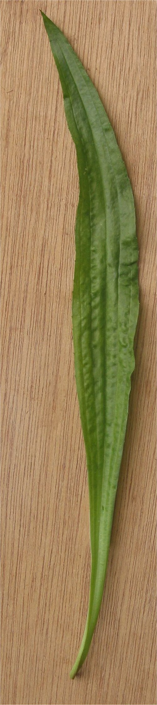

Babka lancetowata
Plantago lanceolata · rodzina babkowate (Plantaginaceae)



Występowanie
Cała Polska, pospolita
Wysokość
20–50 cm
Kwitnienie
V – IX
Zbiór liści
V – VIII
Surowiec
Liście, nasiona
Smak
Ziemisty, lekko gorzkawy
Opis i występowanie
Bylina z liśćmi zebranymi w rozetę przyziemną. Liście wąskolancetowate, z charakterystycznymi 3-7 wyraźnymi żyłkami biegnącymi równolegle (rzadkość w polskiej florze, ułatwia rozpoznanie). Z rozety wyrastają długie, bezlistne łodygi (do 50 cm) zakończone walcowatym kłosem z drobnymi brunatnymi kwiatami i białymi pylnikami.
Rośnie na łąkach, pastwiskach, przydrożach, trawnikach, ścieżkach. Lubi gleby ubogie, ubitej, suchej, dobrze znosi deptanie. Często towarzyszy babce zwyczajnej (większej, z szerokimi liśćmi).
Skład
| Składnik | Co daje |
|---|---|
| Aukubina (glikozyd irydoidowy) | Antybakteryjne, przeciwzapalne |
| Śluz roślinny (do 6%) | Łagodzi błony śluzowe, powleka gardło i jelita |
| Garbniki (~6%) | Ściągające, hamujące krwawienia |
| Krzem rozpuszczalny | Wzmacnia tkanki łączne |
| Witamina C, K, β-karoten | Antyoksydanty, krzepnięcie |
| Allantoina | Regeneracja naskórka, gojenie ran |
| Sole mineralne (K, Zn) | Wspomaganie odporności |
Na co pomaga
- Kaszel (zwłaszcza suchy) — flagowe zastosowanie. Syrop z babki to klasyk apteczny.
- Zapalenie gardła, chrypka — śluz powleka i koi błony.
- Drogi oddechowe — zapalenie oskrzeli, krztusiec.
- Rany, otarcia, ukąszenia — przyłożony świeży liść tamuje krwawienie, łagodzi swędzenie po komarach i meszkach.
- Wrzody żołądka, nieżyt jelit — śluz powleka błonę śluzową.
- Zapalenia jamy ustnej, dziąseł — płukanki naparem.
- Egzema, owrzodzenia trudno gojące — okłady ze świeżych liści lub maści.
Zbiór i suszenie
- Liście — od maja do sierpnia, w słoneczne dni po obeschnięciu rosy. Zbieraj te zdrowe, bez plam.
- Suszenie — w cieniu, max 40°C, w przewiewnym miejscu. Zbyt wysoka temperatura niszczy aukubinę.
- Nasiona — sierpień-wrzesień, gdy kłos brunatnieje. Zawierają śluz — działają lekko przeczyszczająco (podobnie jak nasiona psyllium z babki płesznika).
Przepisy
🍯 Syrop z babki na kaszel (klasyk)
- Świeże liście umyj, osusz, posiekaj drobno.
- Układaj w słoiku warstwami: liście – cukier – liście – cukier. Wypełnij słoik.
- Odstaw w nasłonecznione miejsce na 2-3 tygodnie. Cukier rozpuszcza się tworząc syrop.
- Przecedź przez gazę. Pasteryzuj w słoiczkach 15 min, by przechować dłużej.
- Łyżka 3-4× dziennie. Dzieciom od 3 lat — łyżeczka.
💡 Wersja szybka: zalej liście wodą, gotuj 10 min, dodaj cukier 1:1, gotuj do gęstości syropu. Mniej aromatyczna, ale gotowa od ręki.
🍵 Napar z liści
- Łyżkę suchych liści zalej szklanką gorącej (nie wrzącej!) wody — temperatura ~80°C zachowuje śluz.
- Przykryj, odstaw na 15 minut.
- Pij 2-3× dziennie. Świetne też do płukania gardła.
🩹 Pierwsza pomoc w lesie/na łące
- Skaleczyłeś się? Ugryzł komar / pszczoła? Wzięła pokrzywa?
- Zerwij liść babki, umyj (lub przepłucz w strumyku).
- Pognieć w dłoni / pożuj, aż puści sok.
- Przyłóż do rany / ugryzienia, przymocuj plasterek lub przytrzymaj.
- Przyniesie ulgę w 5-10 minut. Działa antyseptycznie, łagodzi swędzenie.
💡 Stara nazwa „opaska szlachcica" lub „opatrunek wojownika" — w średniowieczu legioniści mieli przy sobie babkę.
🌿 Maść z babki na rany
- Świeże, posiekane liście zalej rozpuszczonym masłem klarowanym lub smalcem.
- Podgrzewaj na bardzo małym ogniu (max 70°C) 1 godzinę.
- Przecedź przez gęste sitko lub gazę.
- Przelej do słoiczków, ostudź. W lodówce trwa 6 miesięcy.
- Smaruj odparzenia, otarcia, drobne rany 2× dziennie.
✓ Zalety
- Najlepszy naturalny syrop na kaszel — łagodny, bezpieczny dla dzieci
- Łatwa do rozpoznania — równoległe nerwy w liściu
- Bezpieczna — praktycznie bez przeciwwskazań
- Działa natychmiast na ukąszenia i drobne rany (świeży liść)
- Można stosować zewnętrznie i wewnętrznie
- Rośnie w każdym miejscu, zawsze pod ręką
✗ Wady i przeciwwskazania
- Bardzo rzadkie — alergia na rośliny babkowate
- Świeży sok może plamić ubrania (zielonkawy)
- Nadmiar nasion = działanie przeczyszczające
- Nie pomyl z babką średnią (Plantago media) — ma podobne działanie, ale słabsze
- Smak naparu mdławy — często łączy się z miętą, miodem
Ciekawostki
- Łacińskie plantago = „podeszwa" — nawiązuje do liści leżących płasko na ziemi.
- Indianie nazywali babkę „śladem białego człowieka" — rosła wszędzie, gdzie pojawili się koloniści (przywieziona z Europy).
- Nasiona babki psyllium (Plantago ovata, kuzyn) to popularne włókno do regulacji jelit.
- Świeży liść babki tamuje krwawienie — używany w polu jako naturalny plaster.
- Dzieci kiedyś bawiły się walcowatymi kłosami babki — strzelały kwiatami jak z proc.